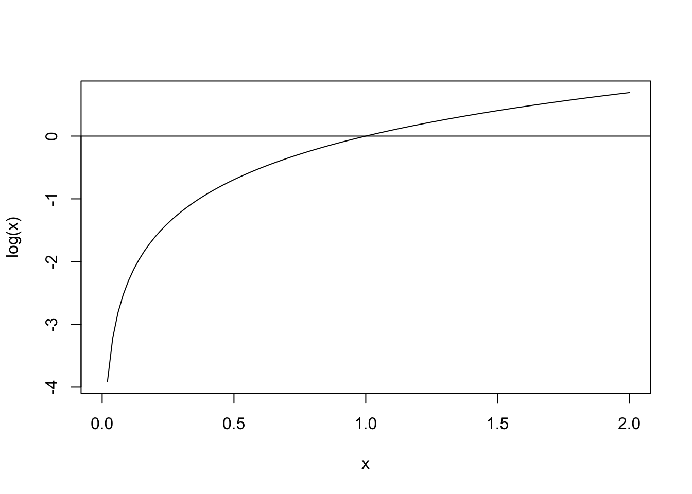
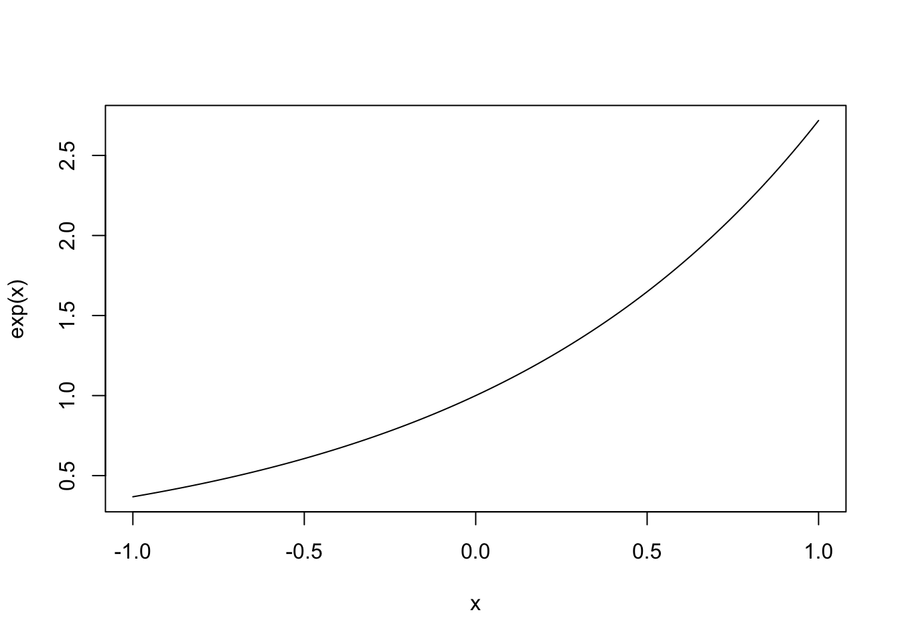

Documenting Code
Properly documenting your code is important. It increases reproducibility and dissemination of your work. R and RStudio provide special packages that make it easy to write clear and eye-catching documentation of your code without the need to put in any extra effort.
The easiest way is to use the “Compile Report” button to produce a report in html or pdf format. This you can apply to any R-script. With this method explanatory text is added using the “#”-symbol. However, such reports are not exaclty “pretty”. R can do much better. Using the package rmarkdown enables you to document your code using the very easy typesetting language Markdown. This allows you to dynamically produce reports including the text describing the code, the code itself, and the results.
To give you an idea how elegant your code and documentation can look I note that all websites through which I provide exercises to you are produced using RMarkdown, e.g., this one from the Ecology course. In fact, you could easily write a whole book using RMarkdown such as this one or make a personal website like this one.
In order to create an RMarkdown document you have to first have to install the package rmarkdown.
install.packages("rmarkdown")
library(rmarkdown)Once this package is installed, open a new RMarkdown document under the file menu: ->File ->New Document ->R Markdown. This will open an .Rmd file. You then have to choose an output format (e.g., PDF or HTML among many others, HTML seems to be the most robust). You compile the report in RStudio to produce the desired output by either typing Ctrl+Shift+K (Cmd on a Mac) (when launched for the first time, RStudio may prompt you to install some packages) or press the “Knit”-button that is located in the menu bar of the script window.
Using RMarkdown is an easy method to write documents that contains extensive documentation of your code using plain text. You can alternate documentation and code chunks by using special RMarkdown tags. Code chunks are set within triple tick marks, followed by {r}:
```{r}
#Everything between these marks will be evaluated in the R console
curve(log, from = 0, to = 2)
abline(h = 0)
```While working on you document, you can either execute code using the code section or evaluate all code in one step by presseing Ctrl+Shift*S (Cmd on a Mac). Text not enclosed in triple tick marks is not evaluated and this is how you include normal text to your report.
Below you can see a few examples of R Markdown syntax that allows you to format your text in different ways:
# This is a first-level headline
## This is a second-level headline
*italics*
**bold**
As said above, code chunks are enclosed by triple tick marks with an {r} at the beginning (indicating that the enclosed code is written in R and not some other programming language). You can enter new code chunks under the “Insert”-menu at the top of the script window. Several optional arguments can be added to the code chunk.
If you do not add any optional argument your report will show both the code chunk and the output:
curve(exp(x), from = -1, to = 1)
If you only want the code chunk the report but not the output start your code chunk with {r eval=FALSE}:
curve(exp(x), from = -1, to = 1)Finally, if you only want the output to show up in your report but not the code chunk you have to add the optional argument start the code chunk with {r echo=FALSE}:

It is also possible to import pictures into an Rmarkdown file. For this to be possible, you need to place the picture file in a place where R can find it. In this example, I stored the image file Rmarkdown-logo.png inside a folder called “images”, which is located inside the same R-project as this .Rmd-file. To determine the size of the figure in the output file, I here started the code chunk with {r out.width = '30%'}, which sets the figure size to 30% of the page width.
knitr::include_graphics("images/Rmarkdown-logo.png")
As always, the internet is full with resources. You can find an introduction to the basics of RMarkdown here and an overview of the most important commands on this cheatsheet. This tutorial seems nice and crisp and more comprehensive overview can be found here.